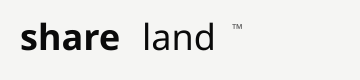

Joint design sprint
Lock scope, architecture, measurement, eligibility, and stop conditions.

A discussion about launching one upcoming Shareland city token natively on Robinhood Chain as a controlled pilot.
Robinhood Chain is built for tokenized real-world assets. Shareland brings a new consumer category: residential market exposure by the square foot.
Public mainnet launched July 1, 2026.1
EVM-compatible Layer 2 built on Arbitrum technology.2
Purpose-built for tokenized real-world assets and open application development.1,2
A city or neighborhood market where you have a view.
Take synthetic price exposure measured in residential price per square foot.
You do not own a specific home or any interest in physical property.
One upcoming Shareland city token, with a capped launch.
Testnet first, including Wallet, funding, trading, and reconciliation.
Native deployment on Robinhood Chain. No bridge initially.
Pause for unresolved transaction failures, unacceptable spread or slippage, reconciliation breaks, or support burden above the agreed threshold.
Test real-estate market exposure as a distinct RWA use case.
Measure the path from discovery through funding and first trade.
Observe trading, liquidity, transaction reliability, and repeat activity.
Explore how residential price-per-square-foot exposure can fit an onchain financial ecosystem.
Robinhood Chain documents ecosystem infrastructure including Chainlink, Alchemy, Uniswap, Morpho, and Paxos USDG.2,3,4,5
Understand the city token and product boundary.
Set up Wallet access and reach a usable balance.
Complete the first city-token transaction.
Track the position, return, or close it.
Wallet and funding completion
First trade completion
Failed transactions and reconciliation
Organic versus incentive demand
Liquidity, spread, and slippage
Repeat activity and support burden
We are asking for enough structure to test one city responsibly, not a broad distribution commitment.
A named ecosystem or product counterpart, plus a legal and compliance observer.
Architecture and Wallet guidance for the proposed native deployment.
Directory and discovery criteria for an eligible pilot.
Relevant ecosystem introductions and a defined review path.
Fallback: a testnet architecture review and written listing criteria, so Shareland can return with a reviewable implementation.
Lock scope, architecture, measurement, eligibility, and stop conditions.
Exercise the end-to-end flow and close operational gaps.
Review evidence before any production launch decision.
One city. Measured honestly. Expand only if it works.